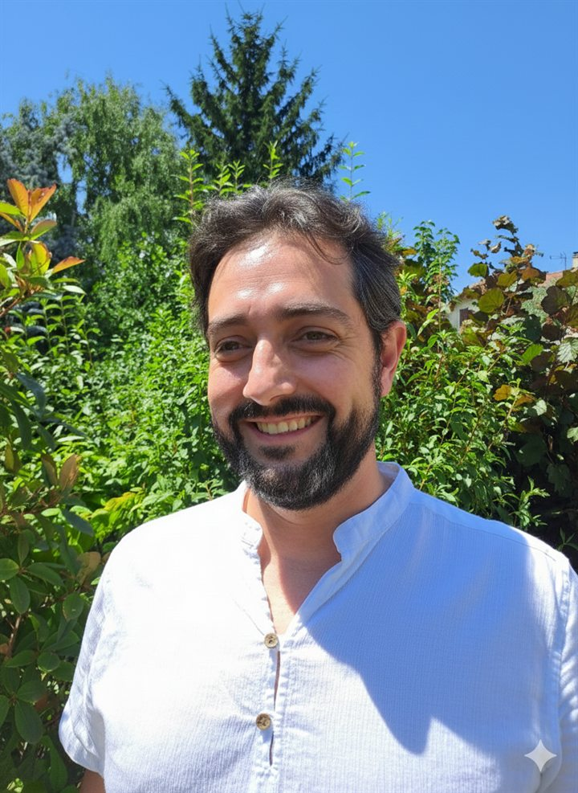

L'énergétique traditionnelle chinoise
Lecture des pouls, de la langue et du teint, puis stimulation des points de méridiens, sans aiguilles, pour rééquilibrer la circulation de l'énergie.
Thérapeute holistique · Beynost
Synthérapies réunit l'énergétique traditionnelle chinoise, le relâchement articulaire, le magnétisme et la résonance dans une même séance, pour une approche globale de la personne.

Respirez au rythme du cercle
Chaque séance associe, selon vos besoins du moment, des pratiques issues de traditions différentes, réunis dans un même accompagnement personnalisé.
Lecture des pouls, de la langue et du teint, puis stimulation des points de méridiens, sans aiguilles, pour rééquilibrer la circulation de l'énergie.
Des mobilisations lentes et précises qui détendent les structures du corps et libèrent les tensions installées.
Un temps de calme profond pour harmoniser les flux énergétiques et soutenir les capacités naturelles d'autorégulation du corps.
La mise en résonance des méridiens prolonge le travail, complétée si besoin par des techniques de respiration profonde.

Pour les enfants comme pour les adultes et les seniors, en accompagnement d'un trouble ou simplement en prévention.
Les motifs de séance les plus fréquents :
Synthérapies est une approche complémentaire. Elle ne remplace ni un diagnostic ni un traitement médical : poursuivez votre suivi auprès de votre médecin.
Environ 1 h 30 pour une première séance, dans un cadre calme et confidentiel.
Un échange en confiance, puis un bilan selon la tradition chinoise.
Sur la table de séance : points de méridiens stimulés sans aiguilles et relâchement articulaire.
Un moment de calme profond où le magnétisme et la respiration rééquilibrent l'ensemble.
Chaque séance se déroule dans un climat d'écoute et de confiance, avec un accompagnement personnalisé, respectueux de la singularité de chacun.
Envoyez une demande en indiquant les moments qui vous conviennent : je vous recontacte pour fixer ensemble le rendez-vous.